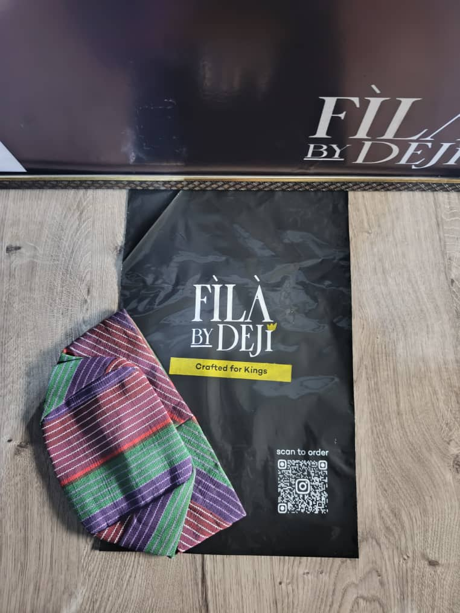

THE ART OF A YORUBA CLASSIC
FÌLÀ
BY DEJI
Crafted for kingsAuthentic Yoruba caps that embody tradition, craftsmanship, and royal heritage. Each piece honours the legacy of our ancestors.
THE COLLECTION
Our Collection
Discover an exquisite range of authentic Yoruba caps. Each piece carries a story of heritage, craftsmanship, and cultural pride.
OUR HERITAGEMore than a cap.
More than a cap.
A symbol of identity.
Fìlà is part of the story we wear — a quiet expression of culture, confidence, and belonging.
Learn our story
FÌLÀ BY DEJI · ROYAL COLLECTIONTHE SIGNATURE EDITMade for the
Made for the
moments that matter.
From distinguished celebrations to everyday expressions of style, our collection brings tradition and refinement together.
Explore the Royal Agbada Cap